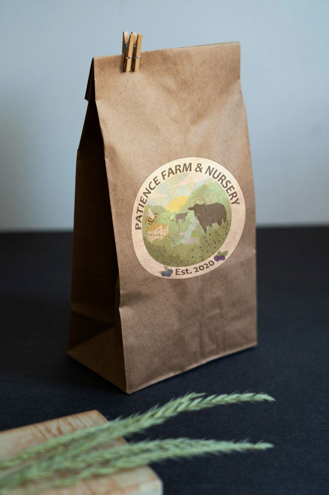

Branding and Logo Design
#Marketing #Branding #Illustrator #Web DesignTimeline: 2014 - Present
Overview
My own personal brand has evolved over the years, culminating in its current iteration. In developing this brand, I wanted to showcase my personal aesthetics while serving as a symbol of my defining ethos. My logo is a stylized allspice flower, which symbolizes compassion in the Victorian language of flowers.

The target audience of my papercraft and printables business is largely nature-loving, Gothic DIY enthusiasts like me. As such, the brand look is designed with a moody, contemplative palate, with floral and botanical elements throughout.
I design my client brandwork to communicate their stories. In client interviews, I prioritize the client's voice and work to help them articulate their vision. In the design phase, I work to meld their business goals and target audience with an infusion of the client's personality.
Roles
In addition to providing a wide array of promotional brand graphics for print and web, I have also designed functional and intuitive websites for my clients.